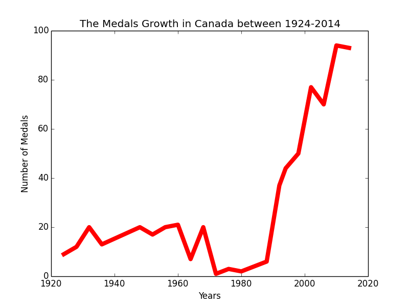

Data Visualization
Comparing the number of medals between Canada, Germany and Japan.

In the pie chart,I list out three different countries: Canada, Germany and Japan and compare them with the amount of medals they have earned so far. Accoding to the pie chart, Canada takes more than half part of the pie chart which is 67%. Germany follows behind it which is 29%, and the last is japan with only a mere 4%
How many Medals have earned so far in Canada.

In the second pie chart, I analyzed the number of medals Canada has so far and distinguish them into Gold, Silver and Bronze Medals. According to the pie chart, Canada has eanred most of the gold medals, it takes part of 50% of all medals. The Second highest is Silver Medals which takes part of 32%, the last is Bronze Medals with 18%. In this chart, we know that Canada usually win the Gold Medals more often than others.
Comparing the Medals which are earned by Men and Women in Canada.

In the Third Pie Chart, I analyze the Medals Data that have been earned between Men and Women in Canada. Base on the pie chart,
The total Medals that men have won are twice as more as Women. Men have won 62% of all the Medals that Canada has and Women have eaned only 38%.
Caculate the amount of Medals Canada has in five different variety of sports.

I made a Bar Chart for the fourth chart. Base on the First Pie Chart, we know that Canada has earned a lot of Medals, therefore, in this Bar Chart I analyze the five common sports in Canada. According to the Bar chart, we can see that Canada has won a lot of Medals rely on Ice Hockey. There are more than 200 medals been won, the second sport that has won the most is Curling. The rest of the sports only won around 3 medals. We can see that Canadians are really good at playing Ice Hockey.
Comparing the Medals which are earned by Women in Canada.

In the Second Bar chart, I made more research and analyzation on "The Medals that been earned by women in different five sports" According to the Bar chart, men also won a lot medals in Ice Hockey which is around 80 medals. The Second most popular sports is also Curling, which has 10 medals been earned.
Analyze the growth of Medals in Canada between 1928-2014.

The Linechart is the last chart I made to analyze the growth of Medals in Canada between 1928-2014. According to the Line Chart, we can see that Canada did not perform really well from 1924 to 1988. The Highest Record of the Medals Canada have won in Olympics are 20, which is in 1948 and 1968. The lowest is in 1972, in that year Canada only won 1 Medals. From 1992 to 2014, Canada started getting more and more Medals. The Highest Record of the Medals had reached tp 94 in 2010, the lowest is 37 in 1992.